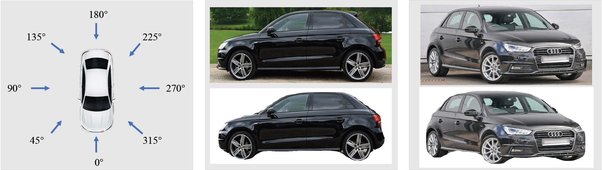
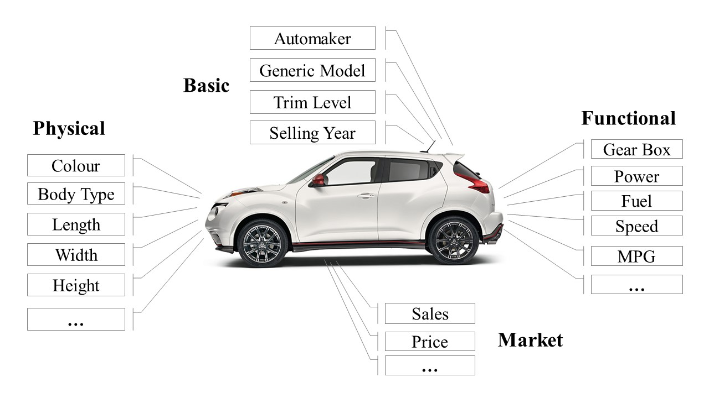
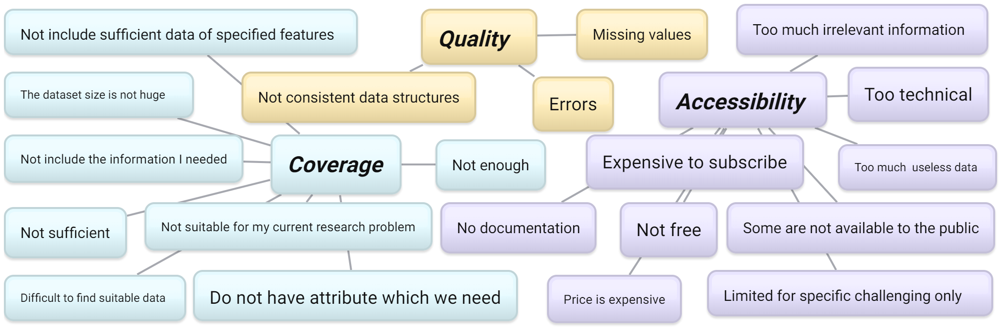

DVM-Car Dataset: A Large-Scale Dataset for Automotive Applications
Welcome to this webpage! We are building a large-scale automotive dataset named Deep Visual Marketing Car (in short DVM-Car) dataset. DVM-Car dataset contains images of numerous car models and the corresponding car specification and sales figures over more than 10 years period, with the hope to better support and serve the needs of researchers in various fields. It primarily constitutes two sections: the image section and the data table section. The shared links are provided below.
Car Images
 About the shared images:
Full car images (zip format)
Usage instruction:
For image selection, users can use two ways to locate target images: 1. use the brand–model–year–colour storing structure fo find car images from the target models; 2. use the Image Table to select the images from the target observation angle (e.g., front images). Users can use the PKL files to eliminate the background from the provided images (a PKL file contains the shape of the appeared car in the corresponding image).
Data Tables
- Basic table contains the car attributes such as model name, model ID and brand name.
- Sales table contains over ten years car sales data in UK/GB.
- Price table contains the entry-level (i.e. the cheapest trim price) new car prices accross years.
- Trim table contains trim attributes like the selling price (trim level), engine type and engine size.
- Ad table includes the information of more than 0.25 million used car ads.
- Image table contains car images attributes like colour, viewpoint.
Common data issues faced by researchers
When building our dataset, we have carried out a small questionnaire (which involves 49 researchers in computer science and business studies), to understand the common issues faced by researchers when dealing with the shared data. As the above figure shows, we found the common issues mentioned by both communities can be broadly grouped into three categories: coverage, accessibility and quality.
Contact Information
- Jingmin Huang: 2421107h@student.gla.ac.uk
- Bowei Chen: Bowei.Chen@glasgow.ac.uk

This work is licensed under a Creative Commons Attribution 4.0 International License.